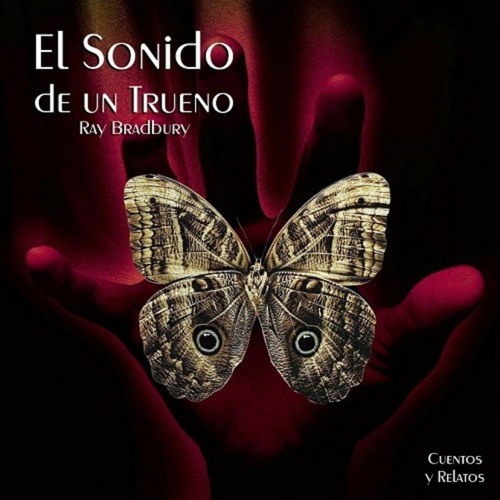

Historia
En la historia, un hombre llamado Eckels paga por la experiencia de cazar dinosaurios en una expedición organizada en el pasado prehistórico. La empresa que ofrece este servicio asegura que el tiempo en esa época es un recurso renovable y que los cazadores deben seguir estrictas reglas para no alterar el curso de la historia.
Eckels, sin embargo, desobedece las instrucciones y pisa fuera del camino designado, causando daño a un insecto prehistórico. Al regresar al presente, se da cuenta de que ha alterado la línea temporal y que incluso pequeños cambios en el pasado pueden tener consecuencias enormes en el presente y el futuro.
Volver al inicio